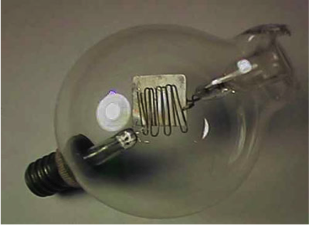
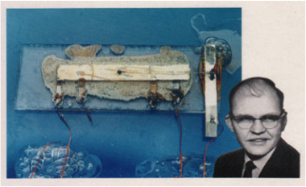
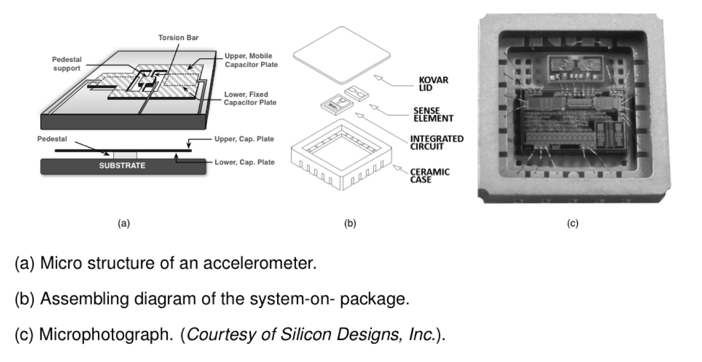
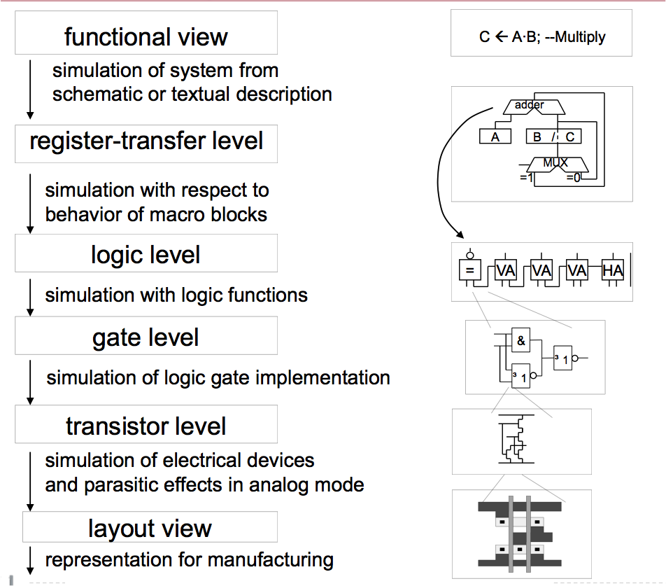

Introduction and Survey#
Course Objectives#
Interfacing Microsystems
Mixed-technology VLSI systems (System-on-Chip, SoC)
Design Methodology
Seamlessly modeling and design over all physical domains
Concept Engineering ASICs
Partitioning
Packaging
Scientific Computing / Data Science#
Circuit Simulation#
OS Tools#
-
A large collection of GNU and Open Source tools which provide functionality similar to a Linux distribution on Windows.
Code Editors#
Data Science#
Folder in your filesystem (sandboxing, virtualenv)
Table data: Comma-Separated-Values (CSV), Spreadsheet (.xlsx, .ods)
Specific formats, e.g. MATLAB mat, HDF5
Embedded Databases
Are your writing or TeXing?#
LaTeX Editors#
IDE’s
Collaborative Frameworks
Bibliography and LaTeX#
Design Project#
Model-Based Systems Engineering of an Inertial Sensor System (MBSE).
Use different description
System level (MBSE with Matlab, Simulink and Python)
Circuit level (SPICE) with behavioural blocks, e.g. OTA and comparator
Hardware: ESP8266 NodeMCU, TIs ADS1115, ADs ADXL335
Arduino IDE C-Programming and/or Thonny and/or Visual Studio Code Micropython
Teams of 3 students
Design Project Flow#
Literature research in journals, professional (serious) internet forums (e.g. application notes of semiconductor companies) and library
Concept of your system
Partitioning
Functions
Work packages
Design, implementation and validation
Mathmatical description
SPICE modeling and simulation
Data analysis and validation
Assignments#
Lab and Lecture.
Lab Design Project: 50%
Final Oral Exam/Project Presentation: 50%
Course Prerequisites#
Fundamentals of linux operating systems
Fundamentals of microelectronics
Device physics and models
Transistor level analog circuits, elementary gain stages
Fundamentals of analog CMOS circuit design
Operational amplifier
Active filter design
Noise analysis
Switched-capacitor techniques
Prior exposure to SPICE, Matlab, Python or equivalent.
Please talk to me if you are not sure, if you have the required background.
Brave New World#

From Sand to Silicon (Infineon, Dresden)#
Sand to Silicon (GlobalFoundries, Desden)#
FinFET (Intel)#
TSMC Fab (Next Gen 7/5 nm)#
Once upon a time …#


First IC and today’s chips#


Packaging Densities#

Moore’s Law#
System Hierarchy#

Use hierarchy to descibe complex systems
Devide and conquere
System Assembly#

Interfacing#

Meeting a System (1)#

System in a Package (SiP)#

You will become an expert#
Indicators.
Background Knowledge
System Knowledge, Architecture, Processing, Implementation
Subconscious Knowledge
Memorized experiences of success stories and dead ends
Special Knowledge
Dicipline related knowledge, e.g. physics, hardware, software
Teamwork
Communication abilities, reporting and presentation
Creativity
Tool-Knowlege
Views on Hardware (1)#

Views on Hardware (2)#
Abstraction Layer#
Design Flow#

Verification#
Frontend vs. Backend (analog)#
Frontend vs. Backend (digital)#
Analog Design Entry#

Netlist#

Layout#

Digital Design Entry#

Hardware Desciption Language#

Technology-Gates and Netlisting#

Standard Cell Layout#

Sustainable Electronics …#
Geekchester.
Why it is worth …#
Circuit Song.
Let’s go to the beach …#
Viva la Electronica.